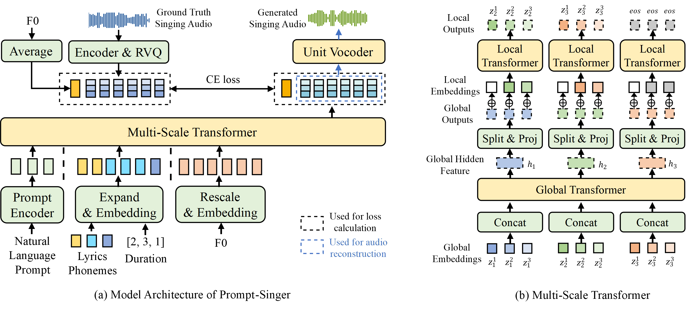

Abstract. Recent singing-voice-synthesis (SVS) methods have achieved remarkable audio quality and naturalness, yet they lack the capability to control the style attributes of the synthesized singing explicitly. We propose Prompt-Singer, the first SVS method that enables attribute controlling on singer gender, vocal range and volume with natural language. We adopt a model architecture based on a decoder-only transformer with a multi-scale hierarchy, and design a range-melody decoupled pitch representation that enables text-conditioned vocal range control while keeping melodic accuracy. Furthermore, we explore various experiment settings, including different types of text representations, text encoder fine-tuning, and introducing speech data to alleviate data scarcity, aiming to facilitate further research. Experiments show that our model achieves favorable controlling ability and audio quality. Audio samples are available at http://prompt-singer.github.io.

The overall architecture of our model is illustrated in Figure (a). It is primarily composed of two sub-modules: 1) the multi-scale transformer, which generates discrete acoustic units conditioned on inputs of natural language prompt, lyrics with duration, and pitch information; and 2) the unit vocoder, which maps the generated acoustic units to an audio waveform.
The multi-scale transformer serves as the backbone of our model. It is a decoder-only transformer with a hierarchical structure to facilitate the modeling of long sequences. This module aims to generate discrete acoustic units of singing voices conditioned on natural language prompts, lyrics phonemes, phoneme durations and vocal-range agnostic melody representation, together with the vocal-range factor as intermediate output. During training, the conditional inputs and target outputs are concatenated into a single sequence and fed to the transformer, which models the correlation using next-token-prediction with cross-entropy loss calculated on the target output part. During inference, the model predicts the range factor and acoustic units conditioned on the prefix input sequence autoregressively. When the acoustic unit generation finishes, the generated units are mapped to a high-fidelity audio waveform with the unit vocoder.
In this section, we provide samples of prompted control over the singer gender. The results are from Prompt-Singer with finetuned FLAN-T5 large text encoder.
| Lyrics: 快乐时你不用分心想起我，难过时请一定记得联络我 Reference Singing: |
| Label | Prompt | Generated Singing |
|---|---|---|
| Male | Would you give me a song sung by a male vocalist? | |
| Female | I'm looking for a song with a woman singer. |
| Lyrics: 才不会让你替我受罪，婚礼上多喝几杯，和你现在那位 Reference Singing: |
| Label | Prompt | Generated Singing |
|---|---|---|
| Male | Do you know any songs with a boy singer? | |
| Female | I'm interested in a song with a lass vocalist, if possible. |
| Lyrics: 时光时光慢些吧 Reference Singing: |
| Label | Prompt | Generated Singing |
|---|---|---|
| Male | I'm searching for a song featuring a guy singer. | |
| Female | Can you compose a song performed by a female singer? |
| Lyrics: 风吹来的砂冥冥在哭泣，难道早就预言了分离 Reference Singing: |
| Label | Prompt | Generated Singing |
|---|---|---|
| Male | I want to listen to a song with a man voice. | |
| Female | I'm in the mood for a song performed by a madam artist. |
In this section, we provide samples of prompted control over the vocal range. The results are from Prompt-Singer with finetuned FLAN-T5 large text encoder.
| Lyrics: 快乐缺点勇气，浪漫缺点诗意，沉默一句一句都是谜题 Reference Singing: |
| Label | Prompt | Generated Singing |
|---|---|---|
| Low (male) | Can you generate a guy singer's song with a deep pitch? | |
| High (male) | Compose a man artist's song with a captivating high pitch. |
| Lyrics: 中古世纪的城市里，我想就走到这 Reference Singing: |
| Label | Prompt | Generated Singing |
|---|---|---|
| Low (male) | Create a song with a bass pitch and man vocals. | |
| High (male) | Design a boy voice's song with sharp harmony. |
| Lyrics: 已经拥有你 Reference Singing: |
| Label | Prompt | Generated Singing |
|---|---|---|
| Low (female) | Compose a deep pitch song with a female lead singer. | |
| High (female) | Can you create a song with a girl voice and shrieking note? |
| Lyrics: 才是考验，没意见你想怎样我都随便 Reference Singing: |
| Label | Prompt | Generated Singing |
|---|---|---|
| Low (female) | Can you generate a miss singer's song with a low pitch? | |
| High (female) | Design high-pitched harmonies with a woman vocalist. |
In this section, we provide samples of prompted control over the volume. The results are from Prompt-Singer with finetuned FLAN-T5 large text encoder.
| Lyrics: 从背后抱你的时候 Reference Singing: |
| Label | Prompt | Generated Singing |
|---|---|---|
| Low | Play me a song with a whispering voice. | |
| Medium | Please give me a song with a voice that strikes a harmonious balance between gentleness and power. | |
| High | Give me a song with a deafening voice. |
| Lyrics: 欲望请放过脆弱的我 Reference Singing: |
| Label | Prompt | Generated Singing |
|---|---|---|
| Low | I need a song with a twittering voice. | |
| Medium | I'd like to listen to a song with a middle-range voice. | |
| High | Give me a song with a roaring voice. |
| Lyrics: 我不羡慕太阳，照不亮你过往 Reference Singing: |
| Label | Prompt | Generated Singing |
|---|---|---|
| Low | Design a song with a quiet voice, gently whispering lyrics to my soul. | |
| Medium | I'm interested in a song with a moderate voice. | |
| High | Synthesize a song with a booming voice for me. |
In this section, we provide samples of prompted control over multiple attributes. The results are from Prompt-Singer with finetuned FLAN-T5 large text encoder.
| Lyrics: 在世上，命运不能更改 Reference Singing: |
| Labels | Prompt | Generated Singing |
|---|---|---|
| Female, Low Volume, Low Pitch | Generate a female singer with a whispering voice to compose a song in a low pitch. | |
| Female, Low Volume, High Pitch | Can you produce a melody featuring a treble pitch and miss voice with a slight sound? | |
| Female, Medium Volume, Low Pitch | Compose a song with a low-pitched pitch and woman artist featuring a moderate vocal style. | |
| Female, Medium Volume, High Pitch | Can you make a song in a sharp key? Need a miss singer with a moderate voice. | |
| Female, High Volume, Low Pitch | Generate a lady singer's song with a loud voice that thunders, with a bass pitch. | |
| Female, High Volume, High Pitch | Create a high-pitched centered song with booming voice and girl singer. | |
| Male, Low Volume, Low Pitch | Synthesize a boy singer's song with a whispering sound at thick level. | |
| Male, Low Volume, High Pitch | Can you create a song with a twittering voice, and if possible, a man voice, that has a distinctive shrill sound? | |
| Male, Medium Volume, Low Pitch | Create a gentleman singer with moderate vocals and beautiful bass harmonies. | |
| Male, Medium Volume, High Pitch | Generate a sir singer's song with a intermediate voice and shrieking harmony. | |
| Male, High Volume, Low Pitch | Make a thick pitch song by a man singer with a ringing voice. | |
| Male, High Volume, High Pitch | Synthesize a song with a unique shrieking tone and a thunderous voice, preferably with a male singer. |
We first provide some samples, where the model incorporating speech data demonstrates superior control capabilities, while the model using solely singing data fails to control attributes or the characteristics are not significant.
| Labels | Prompt | Speech + Singing | Singing Only |
|---|---|---|---|
| Male | Do you have any songs with a male singer? | ||
| Female | I'm interested in a song with a woman vocalist. | ||
| Male, Low Pitch | Design a bass song performed by a guy singer. | ||
| Male, High Pitch | Can you generate a guy singer's song with a high pitch? | ||
| Female, Low Pitch | Create a woman vocalist with bass pitch for an emotional song. | ||
| Female, High Pitch | Synthesize a song with female vocalist and a sharp pitch. |
Next, we present samples obtained by combining different quantities of low-resource singing data with speech data. Pay attention to the quality and melodic accuracy of the synthesized singing. (You may need to scroll right to see full results.)
| Ref Singing | Labels | Prompt | Singing 10min + Speech 100h | Singing 1h + Speech 100h | Singing 10h + Speech 100h | Singing 100h + Speech 100h |
|---|---|---|---|---|---|---|
| Female | I need a song with a female lead singer. | |||||
| Male | I want to listen to a song with a guy voice, if possible. | |||||
| Female, High Pitch | Compose a song with a female voice and its unique charm in its treble pitch. | |||||
| Female, Low Pitch | Creating a song with a lass vocalist and a distinct use of thick pitch. | |||||
| Male, High Pitch | Can you create a song featuring a man vocalist and emphasizing the shrill note? | |||||
| Male, Low Pitch | Composing a gentleman singer's song with a deep pitch. | |||||
| Low Volume | Play me a song with a hushed voice. | |||||
| Medium Volume | I'd like to listen to a song with a moderate voice. | |||||
| High Volume | Give me a song with a roaring voice. |